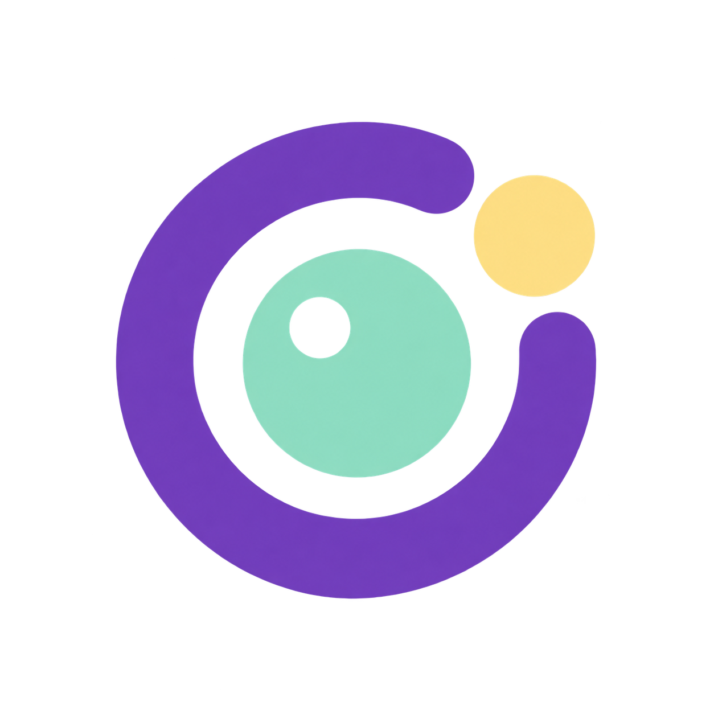
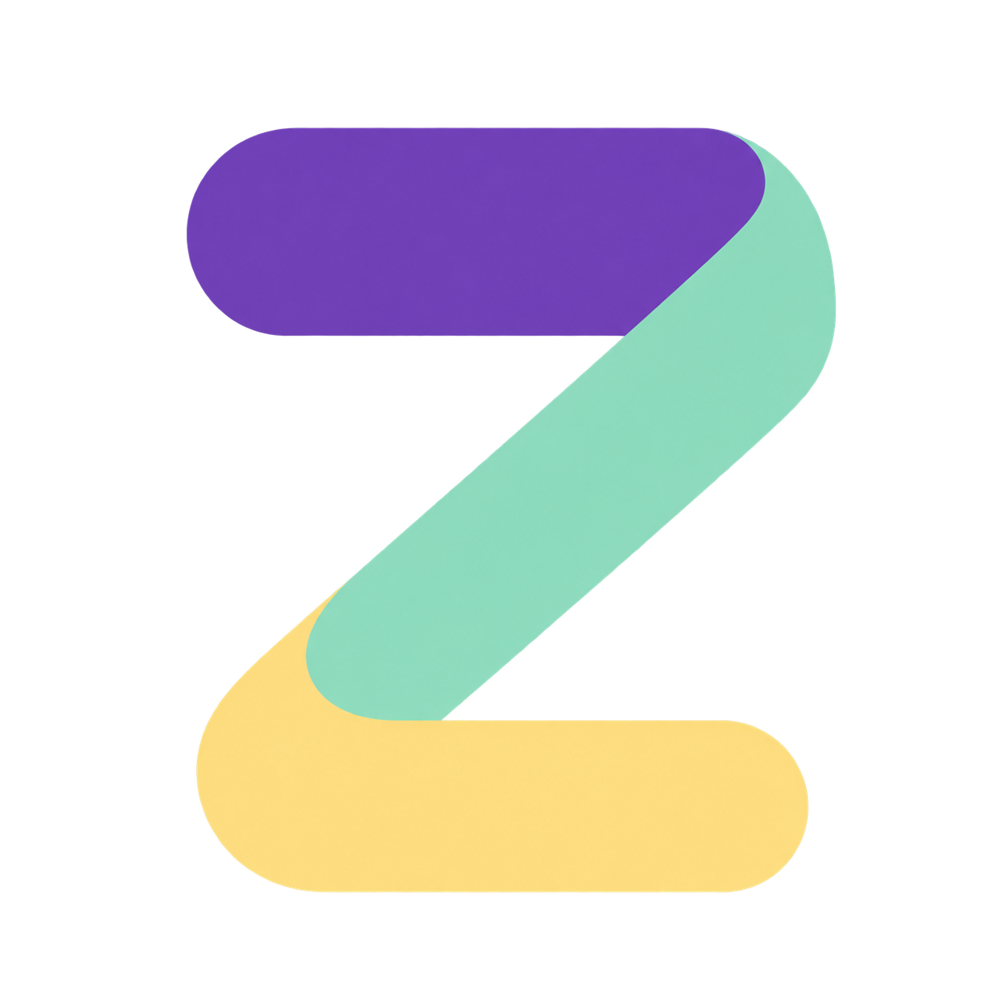

A · 机器人信使
机器人 × 对话气泡。亲和、直接，适合“机闻”或“机野”。
16px32px64px
OPENZOO · BRAND EXPLORATION
三套图标、五个名字。沿用紫色、薄荷绿与黄色，保持轻快，也让小尺寸图标清楚可辨。
已确认：机闻｜OpenZoo News + C 折页 Z机器人 × 对话气泡。亲和、直接，适合“机闻”或“机野”。
开放式 O 形光学环。简洁、专业，适合“机见”或“具身信号”。

阅读折页 × Zoo 的 Z。更抽象，适合 OpenZoo 母品牌延展。

| 中文 | 英文用法 | 气质 |
|---|---|---|
| 机闻 ★ | OpenZoo News | 资讯属性清楚，短、好记 |
| 机见 | OpenZoo Insight | 观察、判断、专题 |
| 机野 | OpenZoo Field | 探索、开源、实践 |
| 具身信号 | OpenZoo Signal | 研发、工程、有效线索 |
| OpenZoo 新知 | OpenZoo Brief | 母品牌延续、研究与产品速读 |
这是创意候选，尚未完成商标可注册性审查。PNG为概念稿，选定后还需制作正式SVG、小尺寸favicon及单色版本。